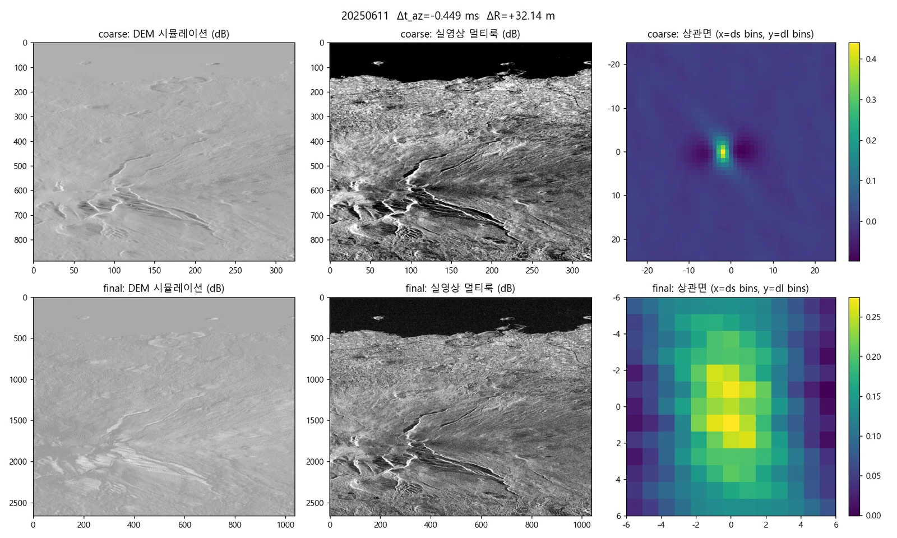
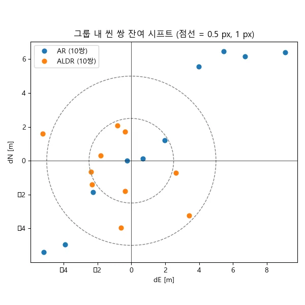
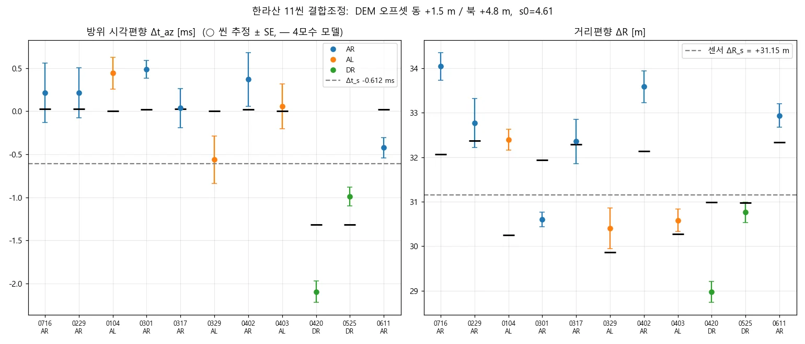
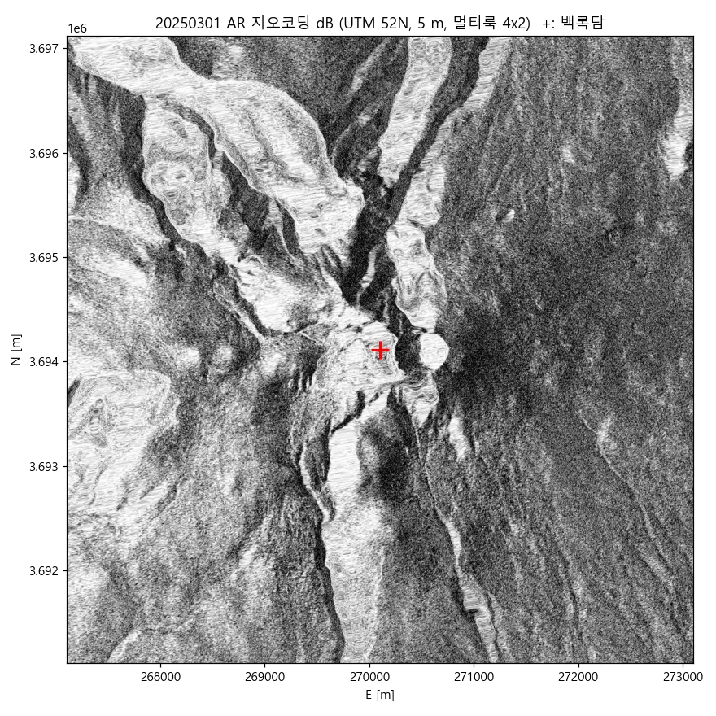
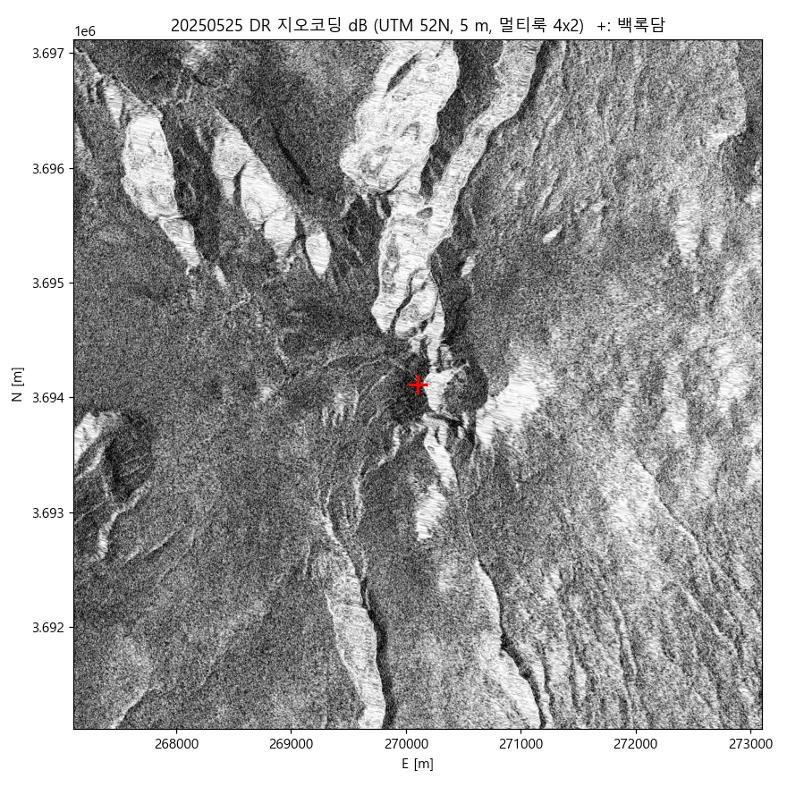
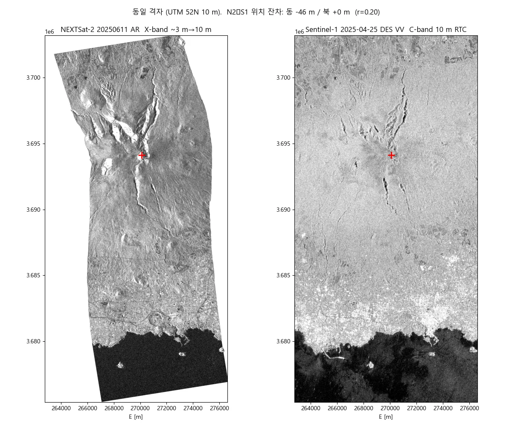
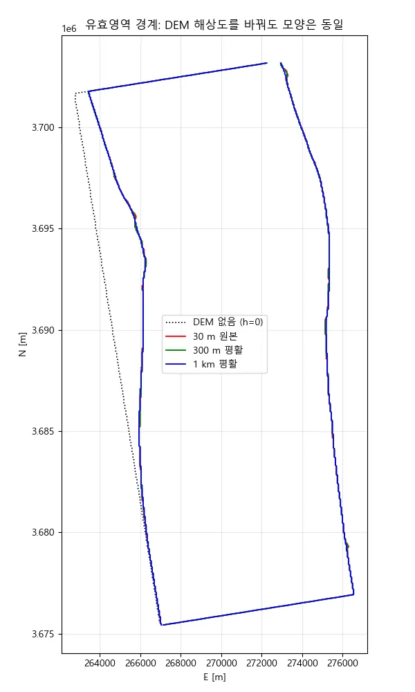
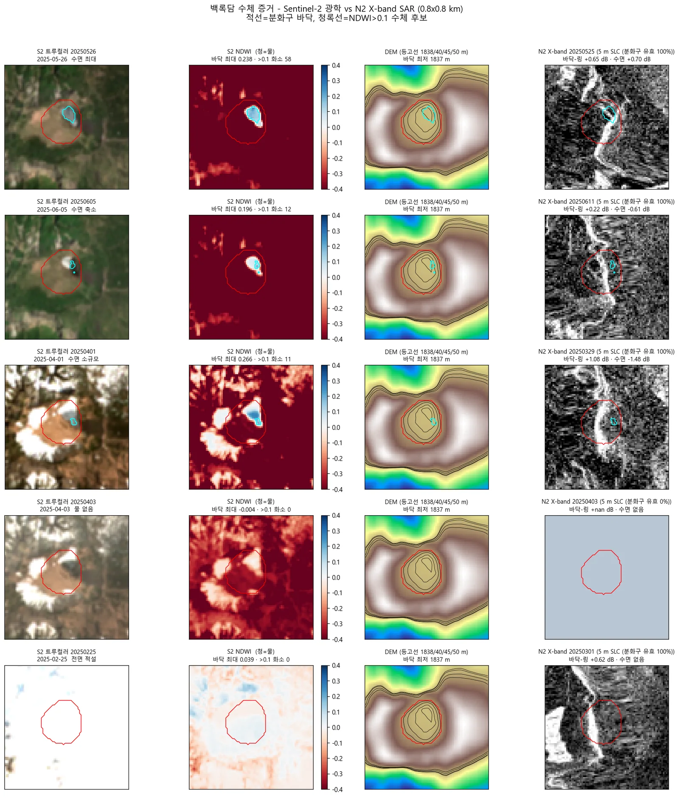
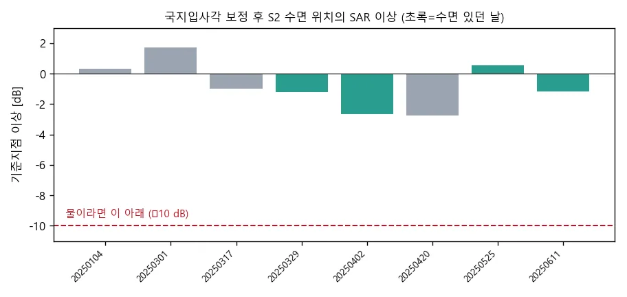
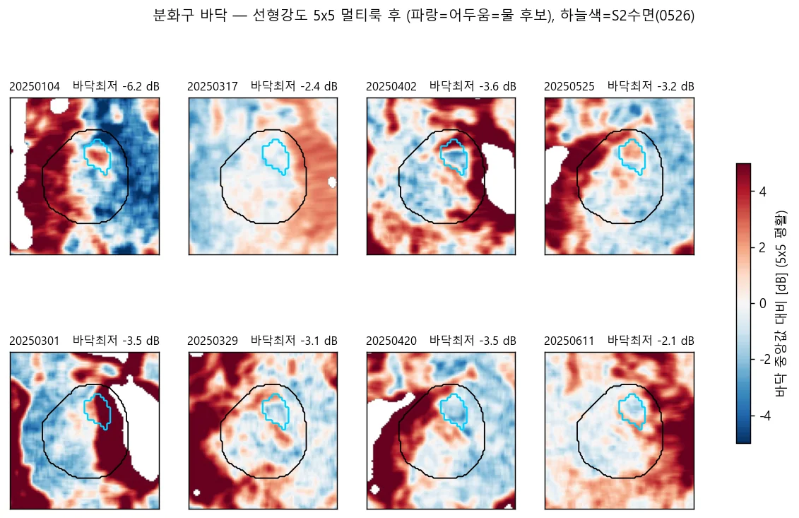

국산 SAR 위성 엄밀센서모델 기하보정 · 백록담 수체 검증Rigorous Sensor Model Geocoding for a Domestic SAR Satellite, with Crater Lake Water Detection
국산 X-band SAR 위성은 어떤 상용·공개 소프트웨어도 지원하지 않음. 파일 안의 궤도·타이밍 정보만으로 거리-도플러 센서모델을 직접 세워 12씬을 5 m 격자로 지오코딩함.No commercial or open SAR software supports Korea's X-band smallsat. I built the range-Doppler sensor model from scratch — using only the orbit and timing inside the file — and geocoded 12 scenes onto a 5 m grid.
배경 · 목표Background
- 차세대소형위성 2호(X-band SAR)는 ISCE2·SNAP·GAMMA 어느 것도 네이티브 지원하지 않음. 쓰려면 처리기를 직접 만들어야 함.
- SAR 픽셀은 광학처럼 '렌즈에서 뻗은 직선'이 아니라 (시각, 거리) 두 측정값으로 정의됨. 따라서 공선조건이 아니라 거리-도플러 방정식을 풀어야 함.
- 한라산 백록담 일대 12씬을 대상으로, 국립공원 지형 모니터링에 쓸 수 있는 정밀도의 지오코딩 산출물을 만드는 것이 목표였음.
- NEXTSat-2 (X-band SAR) is not natively supported by ISCE2, SNAP or GAMMA. To use it at all, you have to write the processor yourself.
- A SAR pixel is not a ray from a lens — it is two measurements, a time and a range. So the model solves range-Doppler equations, not the collinearity condition.
- The target was 12 scenes over Mount Halla's Baengnokdam crater, geocoded accurately enough to be usable for national-park terrain monitoring.
방법Method
- HDF5 헤더를 SI 단위로 정리해 SLC를 읽는 리더를 작성했다 (SSC 포맷, 신형 3D SBI 레이아웃 포함).
- 궤도 상태벡터 60점을 다항식으로 적합해 임의 시각의 위치·속도·가속도 S(t), V(t), A(t)를 얻었음.
- 거리-도플러 방정식을 구현했다 — ① |P − S(t)| = R (거리), ② (P − S(t))·V(t) = 0 (제로도플러: 시선 ⊥ 속도). geo2rdr / rdr2geo 양방향 변환.
- 표준대기 기반 대류권 슬랜트 지연을 보정함.
- Copernicus DEM으로 SAR 영상을 시뮬레이션하고, 실영상과 마스크 상관 정합해 센서 편향을 추정함.
- 12씬 결합조정으로 씬 간 상대 편이를 일괄 보정함.
- EGM2008 지오이드를 반영했다 — Copernicus DEM은 정표고라, 타원체고를 기대하는 지오코딩에서 range 방향 약 24.5 m 편이가 생김. 이 잔차를 지오이드 융기량으로 정확히 귀속시킬 수 있다는 것 자체가 기하 모델이 정합적이라는 증거임.
- Sentinel-1 지오코딩 결과와 교차 검증함.
- Wrote a reader that normalises the HDF5 header into SI units and reads the SLC (SSC format, including the newer 3D SBI layout).
- Fitted 60 orbit state vectors to polynomials for position, velocity and acceleration — S(t), V(t), A(t) — at arbitrary time.
- Implemented the range-Doppler equations: |P − S(t)| = R for range, and (P − S(t))·V(t) = 0 for zero-Doppler, i.e. line of sight perpendicular to velocity. Both directions: geo2rdr and rdr2geo.
- Corrected tropospheric slant delay using a standard atmosphere.
- Simulated the SAR image from the Copernicus DEM and matched it against the real image by masked correlation to estimate sensor bias.
- Ran a 12-scene bundle adjustment to resolve relative shifts between scenes together.
- Applied the EGM2008 geoid: Copernicus DEM holds orthometric heights, so geocoding that expects ellipsoidal heights picks up a ~24.5 m range-direction shift. Being able to attribute that residual precisely to geoid undulation is itself evidence the geometry model is consistent.
- Cross-validated the geocoded output against Sentinel-1.
결과Results
- 12씬 전량을 UTM 52N 5 m 격자로 지오코딩 완료 (백록담 중심 6 km)
- 결합조정 후 씬 쌍 잔여 시프트가 대부분 1 화소(5 m) 이내에 수렴
- 잔차 위치오차 약 24.5 m를 DEM 수직기준(지오이드)으로 귀속 — 오차의 물리적 원인까지 규명
- Sentinel-1 지오코딩 결과와 위치 정합 확인
- 백록담 수체 검증 — N2(X-band)·S1(C-band) 모두 미검출, Sentinel-2 광학만 0.11~0.58 ha 수면 확인. SAR 단독으로는 이 규모 산정호수 모니터링이 부적합하다는 결론
- All 12 scenes geocoded to a UTM 52N 5 m grid over a 6 km area centred on the crater.
- After bundle adjustment, residual scene-pair shifts mostly converge within one pixel (5 m).
- The ~24.5 m residual position error was attributed to the DEM's vertical datum (geoid) — the physical cause, not just the magnitude.
- Positional agreement confirmed against geocoded Sentinel-1.
- Side result: crater water verification — neither N2 (X-band) nor S1 (C-band) detects it; only Sentinel-2 optical shows 0.11–0.58 ha of water.











배운 점 · 한계What I learned · Limitations
- SAR 기하를 블랙박스 없이 이해하게 됐음. 제로도플러가 왜 성립하는지, 상태벡터 보간 차수가 왜 중요한지를 직접 구현하며 알았음.
- 오차의 크기보다 오차의 원인을 아는 것이 중요함. 24.5 m 편이를 '맞추는' 대신 지오이드로 설명해낸 것이 이 작업에서 가장 값진 부분이었음.
- 백록담 건은 결론이 뒤집힌 사례임. 처음엔 'SAR에 수체 신호 없음 → 물이 없었다'로 봤는데, Sentinel-2로 교차검증하니 물은 있었고 SAR가 못 본 것이었음. NDWI 최대 0.238(개방수면은 0.4 초과)로, 개방수면이 아니라 초지 사이 얕고 탁한 습지였음. 관측 실패와 부재를 구분해야 한다는 걸 비싸게 배웠음.
- 한계: 백록담 수체 모니터링에 SAR 단독은 부적합하다는 것이 이 검증의 결론임. 광학 병행이 필수임.
- Came to understand SAR geometry without a black box — why zero-Doppler holds, why the state-vector interpolation order matters — by implementing it.
- Knowing the cause of an error matters more than its size. Explaining the 24.5 m shift as geoid undulation, rather than just tuning it away, was the most valuable part of this work.
- The crater case reversed my own conclusion. I first read 'no water signal in SAR' as 'there was no water'. Cross-checking with Sentinel-2 showed the water was there and SAR simply could not see it — NDWI peaked at 0.238, well below the 0.4 of open water, so it was shallow turbid wetland between grasses, not an open pool. An expensive lesson in separating absence from failure to observe.
- Limitation: the verification concludes that SAR alone is unsuitable for monitoring this crater. Optical imagery is required alongside it.
분석 결과 문서Analysis documents
분석 당시 작성한 결과 문서를 그대로 싣음. 새 탭에서 열림.The result documents written during the analysis, published as-is. Opens in a new tab.
관련 코드Code
sar/nextsat-2/sensor-model/
저장소는 센서 → 위성 → 기법 순으로 정리돼 있고, 각 폴더에 입력·출력 표가 있음.The repository is organised by sensor, satellite and technique; each folder documents its inputs and outputs.
코드 저장소는 비공개입니다. 열람이 필요하시면 아래 연락처로 알려주시면 접근 권한을 드립니다.The code repository is private. Email me and I will grant you access.
산출물Deliverables
- 거리-도플러 센서모델 파이썬 구현 (n2reader · orbit · geometry · tropo · dem · simulate)
- step01–step10 재현 파이프라인
- 12씬 5 m 지오코딩 산출물
- 기하 QC · PSM 정확도 보고서
- 인터랙티브 결과 맵
- Range-Doppler sensor model in Python (reader, orbit, geometry, troposphere, DEM, simulation)
- A reproducible step01–step10 pipeline
- 12 geocoded scenes at 5 m
- Geometry QC and sensor-model accuracy reports
- Interactive results map
원본 보고서와 발표자료는 사내 자료로 공개하지 않음. 분석 코드는 GitHub에 정리되어 있음.Source reports and decks are internal and not published here. Analysis code is organised on GitHub.